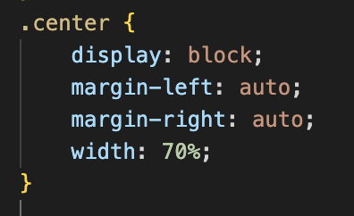

Verkefni 1
Bygging vefsíðu
Uppsetning á vefsíðunni
Sniðmát og innblástur
Ég sótti sniðmátið mitt á vefsíðunni html5up þar valdi ég mér sniðmát sem heitir alpha og byggði upp síðuna mína frá því sniðmáti, ég valdi það því það virtist vera minimaliskt og svo voru einnig undirsíður núþegar tilbúnar og hver og ein undirsíða mismunandi.
Hönnunarforsendur
Í upphafi voru núþegar undirsíður og sem þurfti einungis að breyta tiltum á og svo breytti ég einnig röðuninni. Það voru mikið af sýnidæmum um header eða línur sem ég valdi og nýtti mér á mismunandi hátt eins hvernig skal gera headera og paragraphs og fleira .
Myndavinnsla
Til þess að bæta við myndir bjó ég til möppu sem heitir img svo setti ég allar myndir sem ég ætlaði að nota á vefsíðuna inn í hana. Svo til þess að setja myndirnar á vefsíðuna setti ég inn kóðann <'img src="img/skurdargluggi.png" alt="Mynd af skurðarglugga" class="center"'>
Eins og má sjá í kóðanum þá nota í class sem er mjög hentugt þegar maður er að reyna gera sömu breytuna við marga hluti clasar virka þannig að þú býrð til clasa í css kóðanum og svo sækirðu clasann í html með class"Nafn clasa". Í center clasanum var ég með hluti sem breyttu hvernig myndin liggur á vefsíðunni. Svona lítur hann út í mínu tilfelli.
Gagnleg forrit við vinnslu á síðu
Mér fannst vefsíðan w3shools hjálpa mjög mikið og svo notaði ég einnig youtube kennslumyndbönd til hjálpar.
Áskoranir
Það var virkaði ekki hjá mér að fara frá verkefni 1 yfir í verkefni 2, það þurfti fyrst að fara á forsíðu og svo á verkefni 2. Vesenið var einhver villa sem var ófinnanleg í html kóðanum svo ég einfaldlega copy-aði verkefni 2 og færði verkefni 1 á afritið. Svo breytti ég nafninu á html file-inu yfir í Verkefni 1
Væntingar mínar í Áfanganum og lokaverkefni
Ég hef engar sérstakar væntingar fyrir áfanganum en mér finnst alltaf gaman læra um nýja hluti sem mér hefði ekki dottið hug í að læra um því. Svo ég væri til að læra um einhver tæki sem ég veit ekki að séu til.
Sem lokaverkefni væri ég til að gera eitthvað tengt 3D prentun eða útsteypimótun til að gera einhverskonar nothæfan hlut í daglegu lífi.
Hlaða upp á Github
Ég byrjaði á því að fara á vefsíðuna https://html5up.net/ og valdi mér template til þess að byggja vefsíðuna mína upp frá og downloadaði file-unum sem fylgdu.
Síðan bjó ég til aðgang á Github og downloadaði ég einnig Git svo ég geti tengt kóðann minn við github.
Svo bjó ég til nýtt repository og hikaði við public takkan svo verkefnið verði algengt fyrir almenning. Eftir það dró ég alla file-ana sem fylgdu templateinu sem ég downloadaði í byrjun inn í repository-ið.
Var ég núþegar með vscode þannig ég þurfti ekki að downloada því.
Svo fór inn í vscode og smellti á Source control og leitaði upp extention sem heitir Github Pull Requests and Issues og downloadaði honum. Eftir að extensionið var downloadað þá nota ég það með því að smella á settings svo command palette og leita upp Git Clone og smelli á það. Svo Afrita ég URL-ið á repositoriunu og lími það inn í gluggan sem kom upp þegar ég smellti á Git Clone.
Eftir það er ég kominn með allan kóðan inn í vscode forritið mitt svo ég get farið að byrja hanna vefsíðuna.
Terminal og vel file-ið og svo set ég inn commandin
git add .
Ýti svo á enter
git commit -m”Hér á að skrifa hvað var breytt í kóðanum”
Ýti svo á enter
git push
Ýti svo á enter
Svo til þess að sjá vefsíðuna fer maður í repositoryið smellir svo á settings, svo pages svo breytir maður branches frá none yfir í main og svo smellir maður á save. Eftir það þarf maður að bíða í nokkrar sekúndur en svo kemur upp linkur fyrir vefsíðuna rétt fyrir ofan.
Hér er linkur fyrir Github repositoryinu Github repository